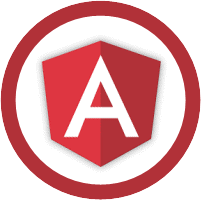
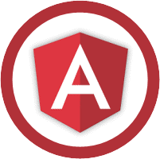

Jayne Doe
master of shadows and the internet!

About...
Hello! I'm an extremely driven and creative Full Stack Developer who is currently open for career oppotunutues as a front-end or back-end web developer in the Greater Seattle Area.
I'm a recent graduate of Coding Dojo, a coding school located in Bellevue, WA that teaches 3 full stacks in 3 months. I'm capable of learning new technologies very quickly, and am always looking for opportunities to further expand my skills and grow as a developer
Continue reading...La Mode

La Mode is an Ecommerce website for designed to market various clothing products. Users are able to view the avaible garments, select their desired quantity, and compile a shopping cart for making a final purchase.
Technologies


Family Contacts

Family Contacts is a free application for managing, sharing, and visualizing your family relationship for both extended and immediate family. As an essential feature of the project, your log-in information determines who you can see and reveals how people are relates to you.
Technologies


 



fiveEleven

Five Eleven is a data visualization project built on the Python software stack. The application transforms the developer job hunt into a more visual, user friendly experience. Bses on location, technology popularity, and other vast data sets, users may easily visualize the varyng size and concentrations of the junior developer job market across the nation.
Technologies


jdoe@gmails.com|206.555.1212